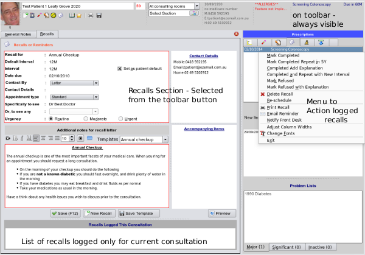

Recalls
This section is pretty much automated, and will learn the intervals
for each recall as they are first entered, so that usually, just a couple of keypresses will auto-generate the entire recall like the one
shown below.

- Recall list on Toolbar will always be visible no matter which section you are in as a constant reminder
- Previous Recall list is accessed from the tabbed lists on the right hand side of the screen
- Actioning menu is accessed by right mouse clicking over the recalls list and an Audit Trail
is kept of any actions undertaken for a recall.
- The Recalls Section to enter new recalls is selected from the recalls button on the main toolbar
and recalls logged during current consultation will be shown underneath the recalls editing area.
- Recalling Patients is a clerical task to be undertaken by perhaps your practice nurse or practice manager see
Recalling Patientsin the Admin section accessed from the sidebar toolbutton.
In the next section we will look at the information you need to enter to generate a recall.